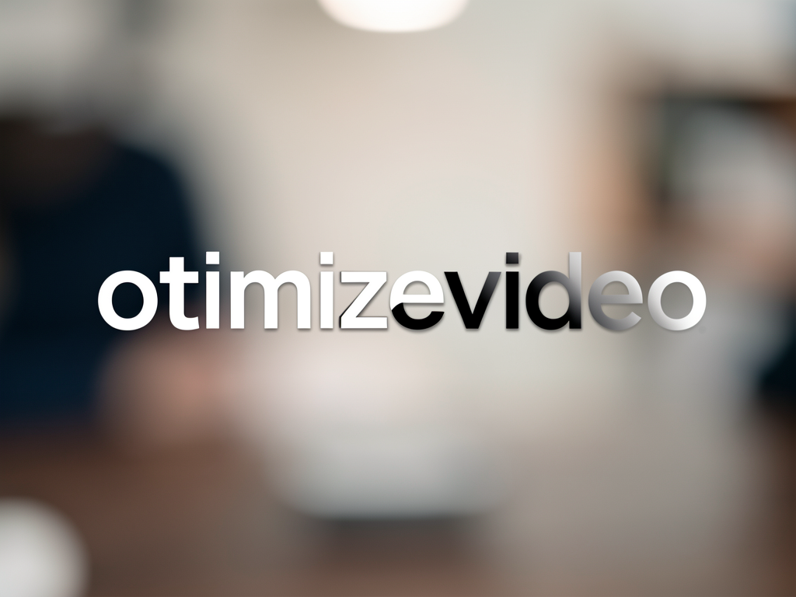
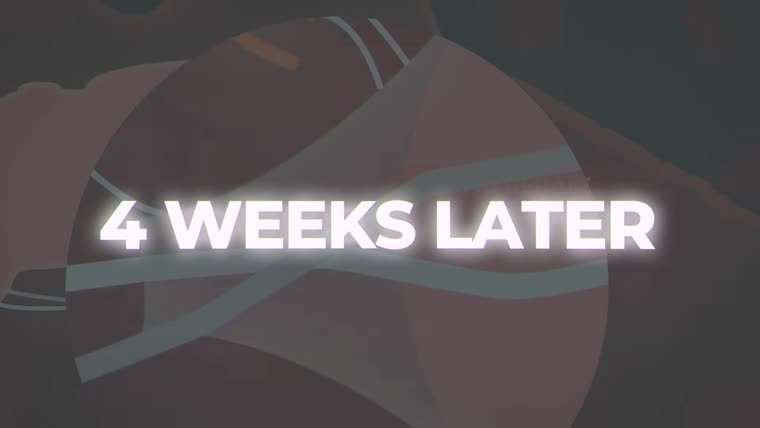

O otv transcreve, fatia a fala em unidades numeradas e pede ao modelo só uma nota de 0 a 10 por id. Quem converte id em segundo e corta é o código — por isso o corte nunca cai no meio de uma palavra e rodar duas vezes dá o mesmo resultado.

Aula, podcast ou palestra de 20 a 30 minutos entram; sai um output.mp4 de cerca de dois minutos com o melhor conteúdo. Cada fase grava um JSON que dá pra ler, editar e re-renderizar sem gastar nada.
Ele vê [042] 4.2s talking_head "texto" e devolve uma nota. O tempo vem da transcrição com timestamp por palavra, então a fronteira do corte já é uma fronteira de palavra real — nunca um timestamp inventado.
A escolha (mochila por nota, cota por tópico, âncoras de gancho e fecho, coesão) é código. Mesmo notas.json, mesmo plan.json. Editar o plano à mão e re-renderizar custa zero chamada de modelo.
Transcrição no Groq ou Whisper local; pontuação no GLM, Gemini, Ollama ou no próprio Claude Code; TTS no inemavox ou ElevenLabs; imagem no flux-2-klein. Uma linha no config.yaml ou uma flag.
Cada fase lê o artefato da anterior e grava o seu. Rodar uma fase de novo não refaz as outras — e o que já existe é reaproveitado, a menos que você peça --forcar.
O padrão. Mantém o apresentador e corta só o que rende. Variante A+ (--substituir gerado) troca os trechos de apresentador por ilustração gerada e preserva o áudio original.
Fica só com slide, demo de tela e gráfico; um roteiro em PT-BR é escrito pelo modelo e narrado por TTS, com o áudio original virando cama a −18 dB.
Mesma seleção do B, sem a camada de narração — para quando o material visual já se explica.
Nada de container nem build. Python 3.12, ffmpeg e as chaves nos .env de sempre.
Fazem todo o corte, o mix de áudio e a manchete. O render roda dentro de um scope com teto de memória.
# Debian/Ubuntu sudo apt install ffmpeg
yt-dlp para baixar, PySceneDetect para achar os cortes, mediapipe e OpenCV para detectar rosto.
# na raiz do projeto pip install -r requirements.txt
Lidas em runtime de ~/projetos/openpcbotv2/.env e ~/projetos/wifi/.env. Nenhuma chave é copiada para o projeto.
# o que é usado GROQ_API_KEY OPENROUTER_API_KEY FAL_KEY # só no modo A+
Todos os comandos abaixo são reais e foram rodados na validação ponta a ponta. O <id> é o nome da pasta criada em trabalho/.
Uma linha faz tudo: baixa, transcreve, detecta cena, pontua, seleciona e renderiza. O resultado é copiado para ~/projetos/output/otimizevideo/<id>/.
python3 otv.py run "https://www.youtube.com/watch?v=..." --modo A --alvo 120
O status lista os artefatos, a manchete e cada segmento com tempo, duração e classificação visual.
python3 otv.py status <id> # plan: modo A · 136.6s em 18 segmentos
Cada fase registra tempo e custo em trabalho/<id>/custos.json. Uma condensação típica sai por centavos de dólar.
python3 otv.py custo <id> # total US$0.0023
Abra o plan.json, tire ou ajuste um segmento e renderize de novo. Nenhuma chamada de modelo acontece — o corte manual é de graça.
$EDITOR trabalho/<id>/plan.json python3 otv.py render <id>
As fases são independentes: re-pontuar com outro modelo não refaz a transcrição nem o download.
python3 otv.py pontuar <id> --provedor gemini --forcar python3 otv.py selecionar <id> && python3 otv.py render <id>
Fica só com slide, demo e gráfico. Precisa da classificação visual por modelo, então passe --visual.
python3 otv.py run "<url>" --modo B --visual glm # roteiro.md + narracao/*.wav
Cada trecho com rosto é trocado por uma imagem gerada com Ken Burns lento. O áudio segue sendo o original, então a fala não muda.
python3 otv.py run "<url>" --modo A --visual glm --substituir gerado
Fonte de 1206 s em inglês sobre longevidade e IA, condensado para 136,6 s em 18 segmentos por US$0,0023 de modelo. O render leva 21 segundos.

O pipeline está implementado e validado ponta a ponta. O que vem depois é escala e formato.